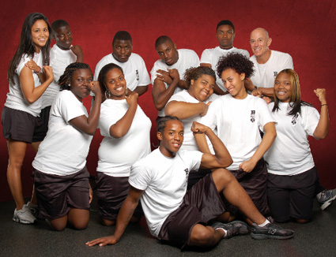

Jon A. Kaplan founded BMoreFit in response to a community meeting on gang violence. Gangs provide a sense of purpose, support, and connection that most of us receive from a team, family, or loving friends. Jon wanted to recreate the sense of community and share the transformative power of fitness through a program that would also train youth to find purpose through a mobile career path in a growth industry.
As an Open Society Institute Fellow, Jon developed a program to enable high school dropouts and 11th and 12th grade students to become certified YMCA group fitness professionals, and work within their communities to help combat childhood obesity. The program taught students health and fitness practices and exposed them to the many professional opportunities in the fitness field through educational classes, field trips and guest speakers. We successfully trained students to become fitness ambassadors in their communities along with helping establish professional goals and roadmap to achieve them.
Our board of directors recently completed a strategic visioning process that affirmed its mission but changed the programmatic direction of the organization. In order to achieve the greatest impact, we are currently dedicating our resources and capacity to the BMoreFit Kit that has been developed.
Learn more about Executive Director Jon Kaplan
Please show your support by making a tax-deductible contribution to the Baltimore Fitness Academy, a 501(c)(3) organization.